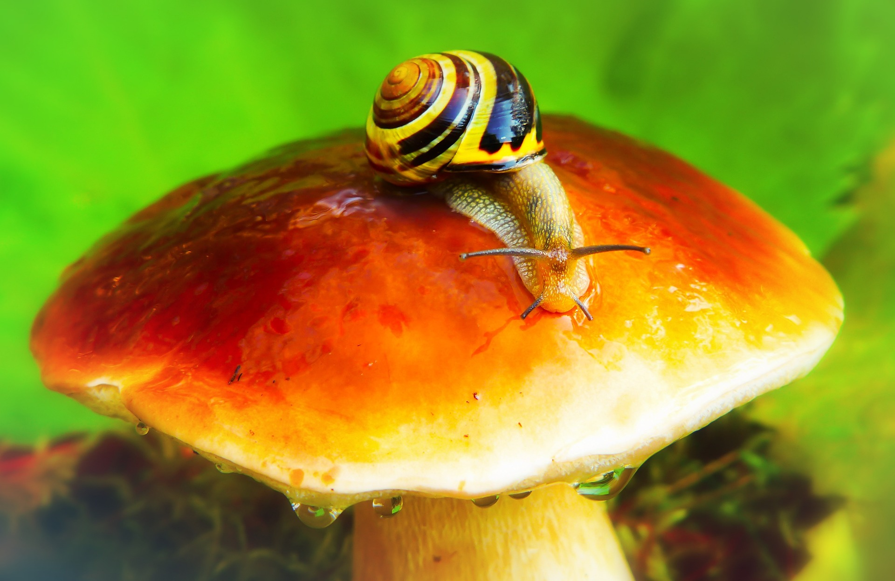

PRESENTACIÓN
Kaixo! muchas gracias por haber llegado a esta web y espero que juntos podamos disfrutar de este hobby tan natural como es ir a pasear al monte y recolectar setas. Aqui podrás ver una serie de hongos y setas de las más comunes de alava. El Fichero está concebido como una estructura dinámica que permita ampliar y actualizar continuamente su contenido. Es de significar que el trabajo no ha sido desarrollado por Micólogos profesionales sino por meros aficionados o “perretxikales” que han puesto su experiencia, tiempo y sobre todo ilusión, al Servicio de la divulgación micológica.